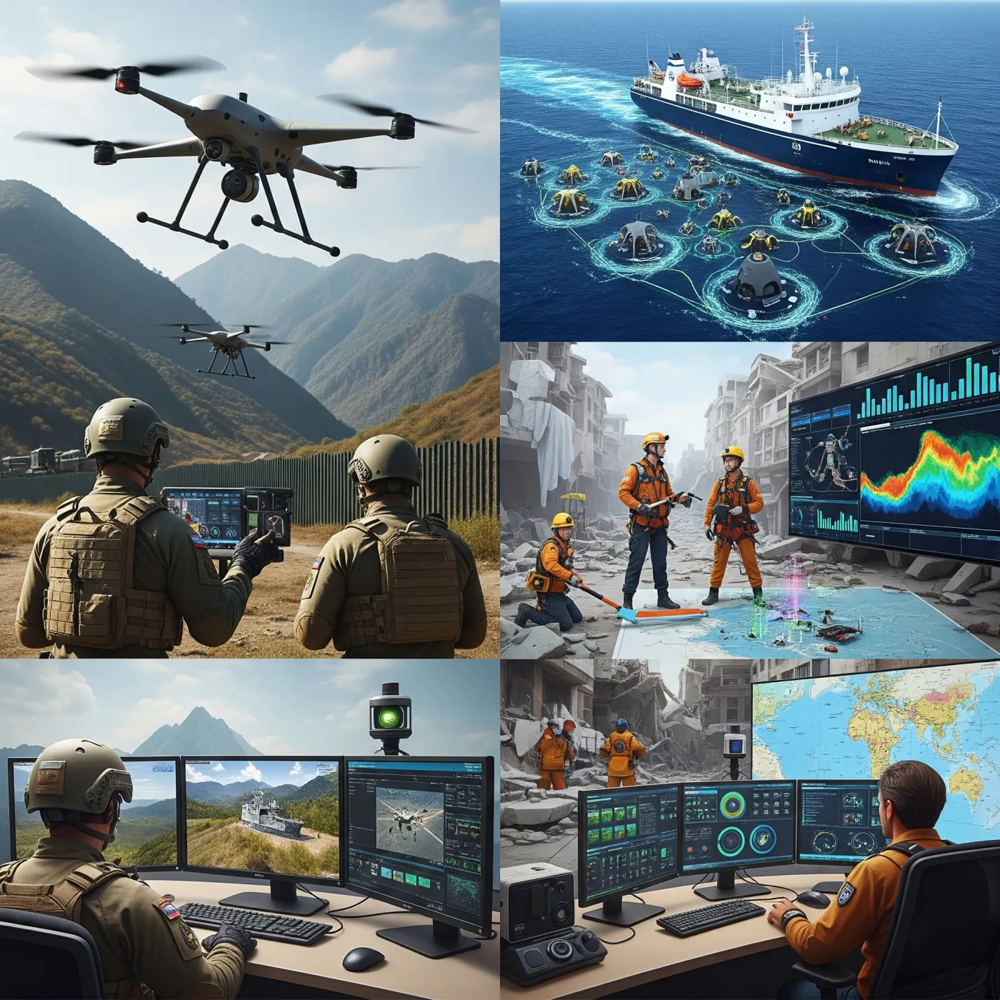

Disaster management
Flood extent, burn progression, structural damage, debris or access disruption, affected infrastructure, and priority-area mapping.
Synchronous sensing can provide rapid, corroborated information for disaster management, climate observation, infrastructure operations, agriculture, energy, maritime safety, and risk analytics.
Civil applications benefit when physical structure, visual context, thermal state, and cooperative movement data are measured over the same event. This reduces dependence on sequential data acquisition during rapidly evolving conditions.
Flood extent, burn progression, structural damage, debris or access disruption, affected infrastructure, and priority-area mapping.
Coastal change, wetland dynamics, deforestation, surface-temperature anomalies, land degradation, and environmental compliance.
Crop condition, irrigation performance, field moisture proxies, heat stress, water-body evolution, and agricultural-risk indicators.
Transport corridors, urban growth, construction progress, surface change, asset encroachment, and condition-related indicators.
Pipeline corridors, power infrastructure, industrial activity, thermal anomalies, mining development, and remote-asset observation.
Exposure mapping, event verification, damage evidence, asset-condition monitoring, portfolio-level risk screening, and claims support.
Vessel correlation, illegal-fishing indicators, incident localisation, sea-surface anomalies, coastal activity, and search-area prioritisation.
ADS-B correlation, airfield status, remote transport connectivity, emergency-support mapping, and infrastructure accessibility.
Settlement expansion, land-use transition, heat-island analysis, transportation development, drainage conditions, and public-asset inventories.

SAR can delineate flood or structural change under cloud cover; optical imagery contributes contextual interpretation when visibility permits; thermal imagery may indicate active fire, equipment, or infrastructure heat; RF observations can assist movement and transport correlation. Fusion provides a more complete operating picture than any single source.
Recurring area-of-interest observation, change alerts, and periodic analytical reporting.
Time-critical tasking and analytical delivery after a specified hazard or operational event.
Machine-readable indicators and geospatial products integrated into customer platforms.
Application-specific evaluation against reference data, field observations, or institutional baselines.